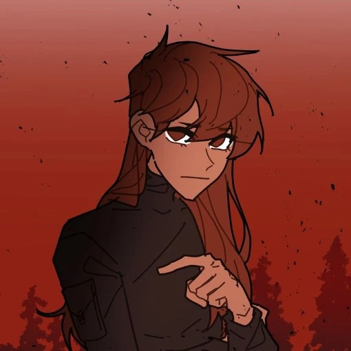

Taylor Hernandez is a protagonist in School Bus Graveyard. She debuted in Episode 1, and is an incredibly sweet teenage girl. She's always seen around her twin brother Tyler.
Taylor is an incredibly sweet girl who is often helping her groupmates feel better after they go through something. She seems to freeze when scared initially, but has grown out of that habit. She shows an interest in mechanics, as she's in the mechanics club at her school. She shows a low tolerance for difficult situations, as she started crying the first night of being sent to the phantom dimension. After a while though, she gains the bravery to turn around and join Logan when he starts shooting at the phantom centipede. She's usually hanging out with her brother and his friends.
Taylor Hernandez is a slightly taller than average girl, standing at 5'6. She has caramel colored skin and shorter worried eyebrows and chocolate brown eyes with visible lashes. She has chest length chocolate brown hair with bangs that swirl to the right side of her head. Her hair spikes out slightly similar to her twin brother, Tyler. She's often seen matching outfits with her brother Tyler, but she often wears casual clothes such as a T-shirt and shorts, or a long-sleeve and leggings. In the park shenanigans art posted by Red, she's seen wearing a grey sweater and black sweatpants with two white stripes down the sides. In the phantom dimension, she can be seen wearing the black protective suit that was purchased by Aiden.